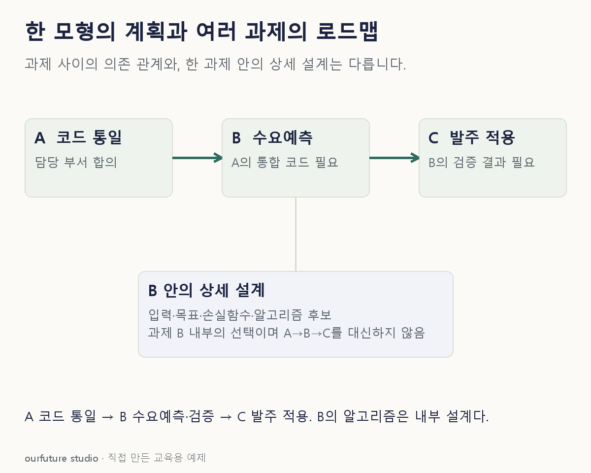

핵심 이론
한 수요예측 모형의 계획에는 예측 대상, 필요한 입력, 담당자, 검증 방식과 일정이 들어간다. 여러 분석 과제의 로드맵은 고객 식별 체계 정비, 데이터 통합, 수요예측, 발주 적용처럼 서로 의존하는 과제를 어떤 순서로 진행할지 연결한다.
예측 프로젝트만 서둘러도 기반 데이터의 품목 코드가 서로 다르면 입력을 구성하기 어렵다. 이때 코드 정비가 예측 과제의 선행 조건이라는 사실을 로드맵에 드러낸다. 반면 특정 모형의 매개변수 후보 목록은 개별 분석 설계에 가깝다.
로드맵은 처음 정한 순서를 무조건 고정하는 문서가 아니다. 자료 확보 지연이나 파일럿 결과로 선행 조건이 바뀌면 그 이유와 영향을 기록해 갱신한다. 여기의 구분은 CRISP-DM의 예비 계획과 반복 진행 원칙을 여러 과제의 자체 사례로 확장한 교육 설명이다.
작은 예제로 확인하기
회사의 세 과제가 다음과 같이 연결된다.
| 과제 | 시작 전 필요한 결과 |
|---|---|
| A 품목 코드 통일 | 담당 부서 합의 |
| B 수요예측 | A의 통합 코드 |
| C 발주 적용 | B의 검증 결과 |
A→B→C는 여러 과제를 잇는 순서다. B 안에서 어떤 알고리즘을 비교할지는 B의 상세 계획에서 다룬다. 세 과제를 같은 주에 시작한다고 적는 것만으로 A의 코드가 B에 필요한 관계가 사라지지 않는다. A가 지연되면 B의 입력 준비와 C의 적용 일정에 어떤 영향이 생기는지 표시해야 한다. 반대로 B의 손실함수나 알고리즘 후보는 이 의존 관계를 대신하지 못하므로 상세 설계에 둔다.
그림으로 확인하기

직접 고르기
A 코드 통일 뒤 B 수요예측, B 검증 뒤 C 발주 적용을 진행한다.
이 연결을 보여 주는 계획은?
- 1. 여러 분석 과제의 로드맵
- 2. 한 모형의 손실함수
- 3. DB 비밀번호 목록
- 4. 하나의 변수 분포표
정답과 오답의 이유 확인하기
정답 1번 — 여러 분석 과제의 로드맵
선행 조건을 기준으로 여러 과제의 순서를 연결했으므로 로드맵에 해당한다.
- 2번은 한 모형의 최적화 기준이다.
- 3번은 접근 정보이며 과제 간 순서가 아니다.
- 4번은 데이터 탐색 결과다.
조건 하나 바꾸어 풀기
문서가 “B 모형의 입력·목표·평가 기준”만 다루면?
풀이: B라는 개별 분석 과제의 설계 계획에 해당한다.
여러 과제 사이의 연결이 아니라 한 과제 안의 조건을 정의한다.
다시 떠올릴 단서
한 과제 안의 설계인가, 과제 사이의 연결인가.
근거와 적용 조건
- IBM: CRISP-DM Guide — Chapter 1 Introduction, Figure 1; 검색 제공 본문에서 6단계와 반복 관계 확인. 직접 PDF 열기는 403. 확인일 2026-10-30.
상황·수치·보기·조건 변경은 자체 교육 예제다. 민간 복원 문항의 공식 정답이나 실제 성능·학습 효과를 뜻하지 않는다.
읽은 내용을 적용해 보기
실제 일정 최적화나 프로젝트 완료일 계산이 아닌 교육용 문서 구분이다.